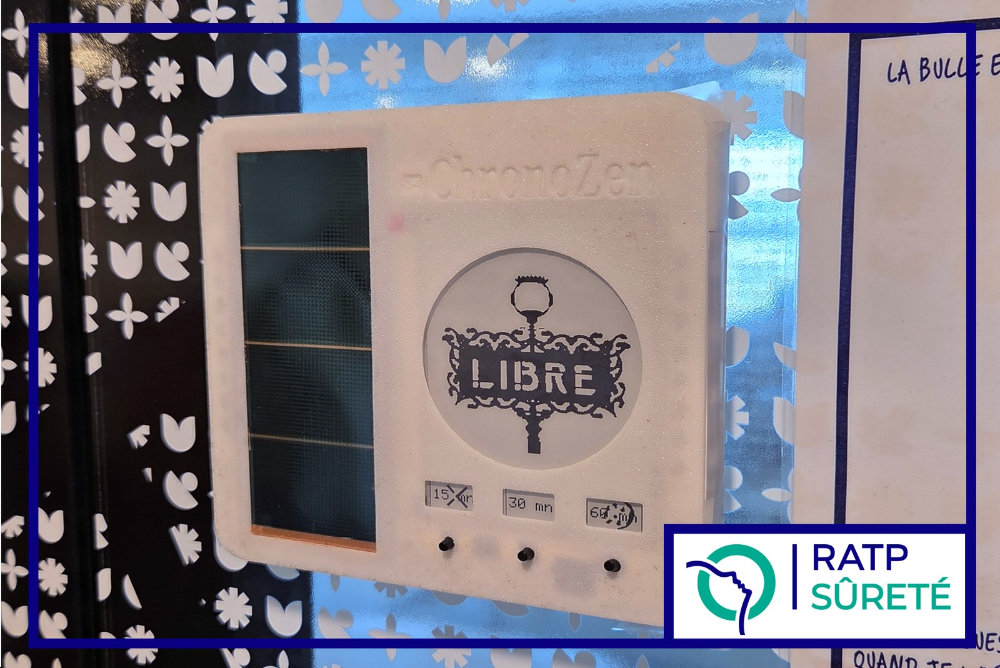
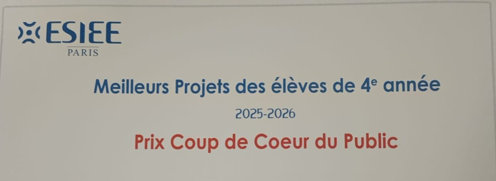

Internship · RATP
Smart hourglass*
An e-paper display prototype engineered to run autonomously via an indoor photovoltaic cell harvesting ambient lighting. The project bridges solar energy harvesting, power budgeting, ultra-low-power embedded firmware, and frugal hardware design.
* Display name; the internal project codename remains confidential.

Starting point
Eliminating wired power for a connected display
The internship focused on an e-paper display powered by a photovoltaic cell harvesting indoor ambient light. Before considering field deployment, it was essential to verify that harvested energy could sustain system loads—even under low-illumination conditions—while meeting operational use cases.
This work sits squarely within solar energy harvesting: matching available PV generation against system consumption profiles and tuning both hardware and user workflows for energy autonomy. Deep-sleep duty cycling and bistable e-paper technology drastically cut power draw, while component selection incorporated material frugality criteria. These energy-management trade-offs transfer directly to off-grid renewable systems well beyond IoT hardware.
My contributions
Aligning embedded code, power budgets, and design constraints
I developed the embedded firmware and validated the operating thresholds required for self-powered autonomy, while translating project requirements into technical specifications with stakeholders.
- Implemented deep-sleep states, non-volatile state persistence, and display refresh strategies to minimise firmware energy draw.
- Built the system power budget and verified autonomous operation under low-illuminance conditions.
- Benchmarked display, power-management, and communication architectures before drafting technical specifications.
- Collaborated with external subcontractors on a custom PCB design and gathered feedback from prospective end-users.
Outcome & recognition
Presented publicly and awarded by the audience
I pitched the project at a public showcase, where it won the Audience Choice Award at the ESIEE Paris Best Student Projects event on 6 May 2026.

Deliverables & disclosures
The functional prototype, firmware, power budget, and technical specifications form the core deliverables. The prototype photo and partial award certificate are shared here; component references and internal documents remain confidential.
I would be glad to discuss the engineering trade-offs, test protocols, and my contributions during an interview.
Discuss this project